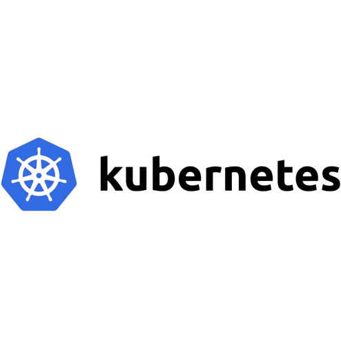
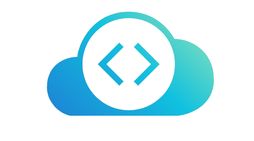
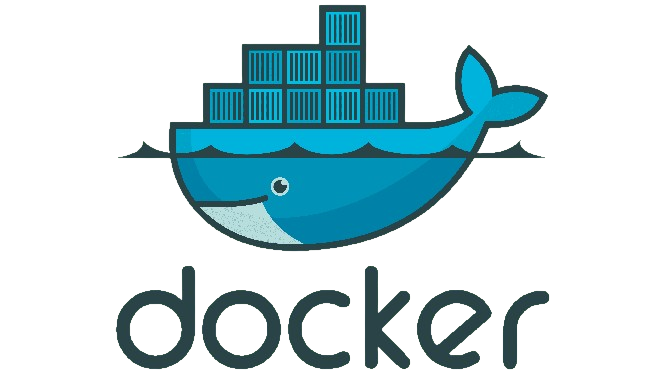
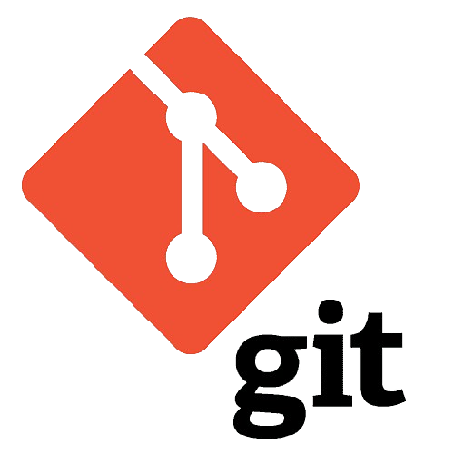

Certifications
AWS Certified Developer – Associate
November 28, 2026
- Deep understanding of managing the entire life cycle of applications.
- Proficiency in writing applications using AWS service APIs, AWS CLI, and SDKs.
- The utilization of containers for application development is a crucial aspect of modern cloud computing.
- Develop, deploy, and debug cloud-based applications using Continuous Integration/Continuous Deployment (CI/CD) pipelines.
- Ability to develop applications that adhere to AWS best practices, ensuring high-quality and efficient cloud-based solutions.
 View Certificate
View Certificate
AWS Certified Cloud Practitioner (CLF)

November 28, 2026
- Supervising the architecting and deployment of applications within AWS platforms.
- Management and monitoring of cloud platforms.
- Designing and building applications on the cloud.
View Certificate
LFS101x: Introduction to Linux
November 22, 2022
- Basic Command Line Usage: Learning essential Linux commands and navigation.
- File System Structure and Permissions: Understanding the Linux directory hierarchy and managing file permissions.
- Package Management: Installing, updating, and removing software using package managers.
- Basic Shell Scripting: Writing scripts to automate tasks.
- System Monitoring and Maintenance: Using tools to monitor system performance and perform maintenance tasks.
View Certificate
LFS158x: Introduction to Kubernetes
November 1, 2022
- Kubernetes Architecture: Core components, including master and worker nodes.
- Kubernetes Objects: Key objects like Pods, Services, and Deployments.
- Cluster Management: Setting up, configuring, and maintaining clusters.
- Networking and Storage: Concepts of Services, Ingress, and PersistentVolumes.
- Security and Monitoring: Best practices for security and tools for monitoring.
View Certificate
Kubernetes Certified Application Developer (CKAD)

October 10, 2022
- Design and Deploy applications on the Kubernetes Cluster.
- Secure Kubernetes cluster with Secrets and Network Policies.
- Create and Schedule Jobs in Kubernetes and Configure Persistent Volumes.
- Configure Readiness and Liveness Probes in a cluster.
- Troubleshoot Applications Deployed using Logs and Upgrade and Rollback Applications.
View Certificate
Kubernetes Challenges

October 12, 2022
View Certificate
Docker for the Absolute Beginner - Hands On - DevOps
Septmber 28, 2022

- Build Docker images using Dockerfiles with Hands-On Exercises.
- Understanding what Docker Compose is.
- Build Application stack using Docker Compose Files.
View Certificate
Terraform
October 29, 2022
- Gained a good understanding of Infrastructure as Code and confidence working with the HCL format.
- Gained hands-on experience working with Terraform.
- Learned to provision AWS infrastructure with Terraform.
View Certificate
GitLab CI: Pipelines, CI/CD and DevOps
October 18, 2022
- Continuous Integration (CI), Continuous Delivery (CD), and Continuous Deployment (CD).
- Automated build, test & deployment with GitLab CI.
- Learned industry "best practices" in building CI/CD pipelines.
- Automatic deployments using AWS.
- Solved problems with hands-on assignments and Merged Requests.

View Certificate